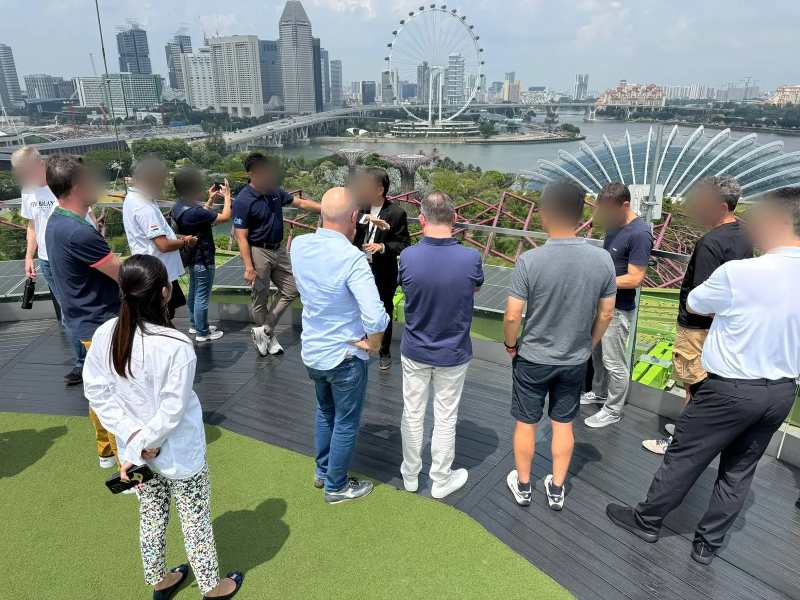
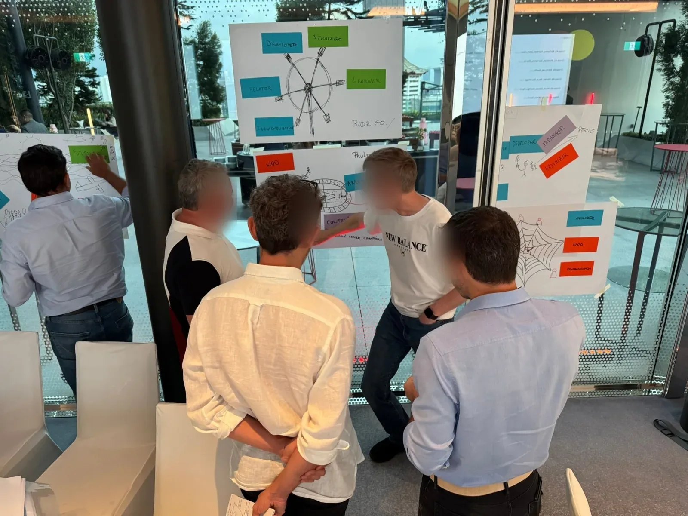
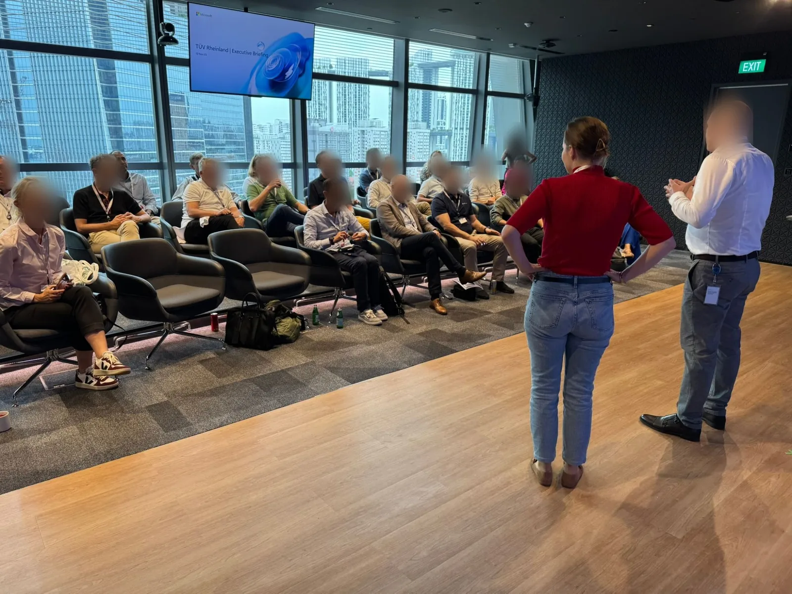
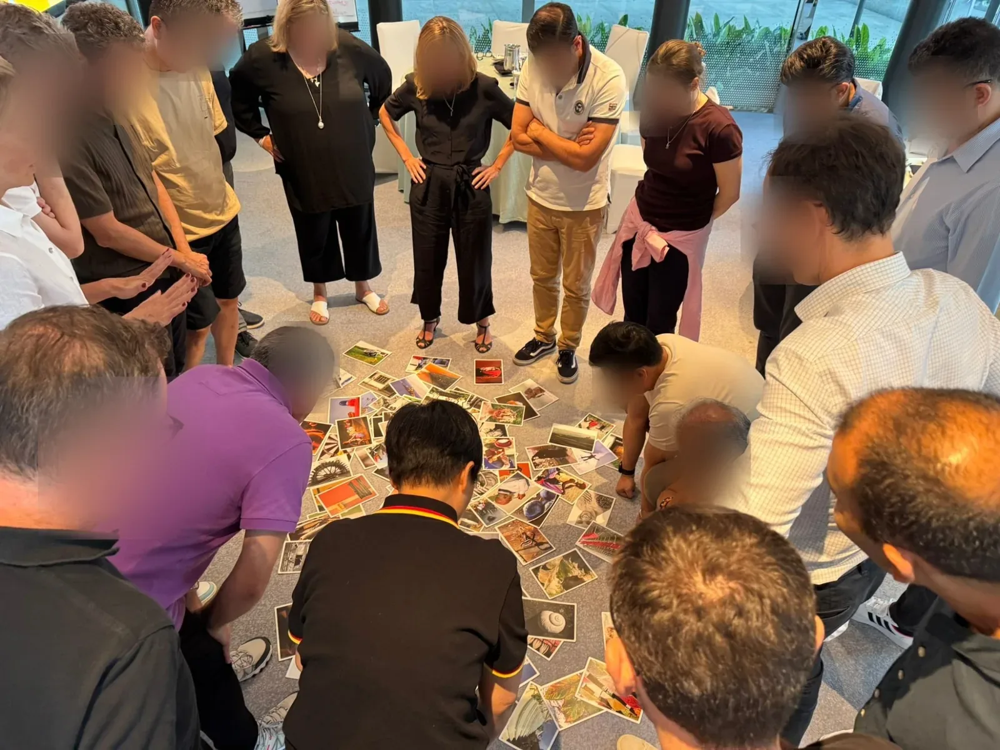
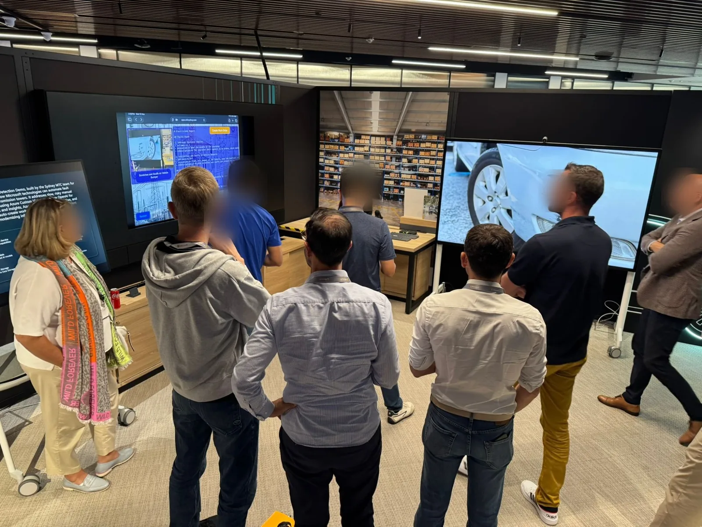

Case Study
Eine Führungsmannschaft, ein Betriebssystem
Wie ein global aufgestelltes Industrieunternehmen aus 40 einzelnen Führungskräften eine Mannschaft mit gemeinsamer Sprache gemacht hat.
Beispieltext. Diese Seite ist eine Vorlage für Projektzusammenfassungen: Sie führt von der Ausgangslage des Kunden über die Diagnose und den Entwurf des Programms bis zur Durchführung, zur gemeinsamen Reflexion und zu der Frage, die am Ende die wichtigste ist — was davon ist im Alltag angekommen?
Kunde
Industriekonzern, 12.000 Mitarbeitende
Branche
Fertigung & Technologie
Zielgruppe
40 Führungskräfte, 14 Länder
Format
Learning Journey, 3 Module
Dauer
9 Monate
01
Ausgangslage
Eine Strategie, die niemand gleich las
Beispieltext. Der Kunde kam mit einer klaren Beobachtung und einer unklaren Ursache zu uns: Die neue Konzernstrategie war beschlossen, kommuniziert und in jedem Townhall vorgestellt worden — aber zwölf Monate später bewegte sich in den Bereichen wenig. Projekte liefen parallel statt gemeinsam, Entscheidungen wurden nach oben delegiert, und dieselbe Debatte kam in jedem Quartal neu auf den Tisch.
Die erste Anfrage lautete: „Wir bräuchten ein Kommunikationstraining für unsere Führungskräfte.“ Solche Anfragen nehmen wir ernst — aber nicht wörtlich.
02
Diagnose
Was wirklich im Weg stand
Beispieltext. Vor jedem Entwurf steht bei uns das Zuhören. Über sechs Wochen haben wir 18 Interviews geführt, zwei Leitungsrunden begleitet und eine anonyme Team-Diagnostik ausgewertet. Das Bild, das entstand, hatte mit Kommunikationstechnik wenig zu tun.
- Kein gemeinsames Vokabular. Vier Bereiche benutzten dieselben Begriffe für vier verschiedene Dinge. „Priorität“ hieß je nach Standort etwas anderes.
- Niedrige psychologische Sicherheit. Widerspruch wurde im Meeting vermieden und danach auf dem Flur nachgeholt.
- Stärken ohne Landkarte. Die Mannschaft war fachlich stark besetzt, wusste aber nicht, wer wofür der richtige Kopf ist.
- Entscheidungen ohne Adresse. Es war selten klar, wer entscheidet — also entschied niemand.
Unsere Rückmeldung an den Vorstand war unbequem und notwendig: Ein Kommunikationstraining hätte hier nichts verändert. Das Problem lag nicht in den Fähigkeiten der Einzelnen, sondern im Zusammenspiel.

03
Planung
Ein Programm, das zur Diagnose passt
Beispieltext. Aus der Diagnose wurde eine Learning Journey über neun Monate — kein Seminar, sondern eine Abfolge von Modulen, die aufeinander aufbauen und zwischen denen im Alltag gearbeitet wird. Drei Entscheidungen haben den Entwurf geprägt:
- Gemeinsam statt gestaffelt. Alle 40 Führungskräfte durchlaufen dieselben Module zur selben Zeit. Eine gemeinsame Sprache entsteht nicht in getrennten Kohorten.
- Diagnostik als Startpunkt. Jede Person startet mit einem Stärkenprofil, das Team mit einer gemeinsamen Auswertung. Man arbeitet an sich und am Ganzen gleichzeitig.
- Echte Themen statt Fallstudien. Geübt wird an den drei Vorhaben, die ohnehin auf der Agenda stehen. Nichts wird für den Workshop erfunden.
Vorstand und Personalbereich haben den Entwurf mitgetragen, bevor der erste Termin stand — einschließlich der Frage, woran wir am Ende gemeinsam messen wollen, ob es gewirkt hat.
04
Durchführung
Neun Monate, drei Module, ein Alltag dazwischen
- Modul 1 — Sich selbst kennen. Zwei Tage in Singapur: Stärkenprofile, ein gemeinsames Bild der Mannschaft, erste ehrliche Gespräche über das, was im Weg steht.
- Zwischenphase. Kollegiale Beratung in festen Dreiergruppen, ein 1:1-Coaching pro Person, Materialien und Aufgaben auf der Lernplattform.
- Modul 2 — Zusammen entscheiden. Entscheidungswege, Konflikt in der Sache, psychologische Sicherheit — geübt an zwei laufenden Vorhaben.
- Modul 3 — In die Organisation tragen. Jede Führungskraft bringt ihr eigenes Team mit ins Bild und verlässt das Modul mit einem konkreten nächsten Schritt.


05
Reflexion
Was hat gewirkt — und was nicht
Beispieltext. Am Ende jedes Moduls und noch einmal drei Monate nach Abschluss haben wir gemeinsam ausgewertet: mit einer Wiederholung der Team-Diagnostik, moderierten Retrospektiven und Einzelgesprächen. Ausdrücklich auch mit der Frage, was nicht funktioniert hat.
- Getragen hat: das gemeinsame Stärkenbild. Es gab der Mannschaft zum ersten Mal eine neutrale Sprache für Unterschiede, die vorher als Charakterfragen verhandelt wurden.
- Gebraucht hat es länger: psychologische Sicherheit. Sie lässt sich nicht in einem Modul herstellen — sie entstand erst, als die ersten Widersprüche im Meeting folgenlos blieben.
- Funktioniert hat nicht: die ursprünglich geplanten digitalen Zwischenaufgaben im Zwei-Wochen-Takt. Zu eng getaktet für den Alltag. Wir haben nach Modul 1 auf einen Monatsrhythmus umgestellt.
06
Transfer
Vom Modul in den Alltag
Beispieltext. Ein Programm ist dann gelungen, wenn man es hinterher nicht mehr braucht. Damit die Erkenntnisse den Raum verlassen, wurden sie an bestehende Routinen gehängt statt an neue Formate:
- Entscheidungen bekamen einen Namen. Jeder Tagesordnungspunkt in der Leitungsrunde trägt seither die Person, die entscheidet — und die Angabe, ob beraten oder entschieden wird.
- Stärkenprofile wurden Teil der Teamarbeit. Neue Projektteams starten mit einer kurzen Runde darüber, wer was einbringt.
- Die Kaskade in die zweite Ebene. Jede Führungskraft hat zwei Einheiten mit dem eigenen Team durchgeführt — mit fertigem Material, aber in eigenen Worten.
- Ein fester Punkt im Kalender. Zweimal jährlich eine halbtägige Retrospektive der Führungsmannschaft, moderiert — im ersten Jahr von uns, seither intern.

„Beispielzitat. Wir sind mit der Bitte um ein Training gekommen und mit einer anderen Frage herausgegangen. Rückblickend war genau das der Punkt, an dem es angefangen hat zu wirken.“
Beispielname, Chief Human Resources Officer
Ergebnis
Beispielwerte. Gemessen wurde vor dem Start und drei Monate nach Abschluss — mit derselben Team-Diagnostik und denselben Fragen.
+31%
höhere Werte für psychologische Sicherheit in der Führungsmannschaft
40
Führungskräfte aus 14 Ländern, gemeinsam durch alle drei Module
2×
jährliche Retrospektive, seit dem zweiten Jahr intern moderiert
Klingt das nach Ihrer Ausgangslage?
Erzählen Sie uns, woran es gerade hängt. Wir hören erst zu und schlagen dann etwas vor — nie umgekehrt.
Kontakt aufnehmen